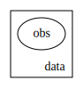
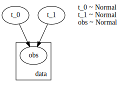
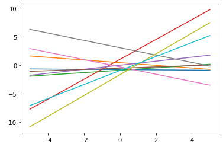

Contents
import torch
import pyro
import pyro
def model(x, y=None):
theta_0 = pyro.param("theta_0", torch.randn(1))
theta_1 = pyro.param("theta_1", torch.randn(1))
with pyro.plate("data", len(x)):
return pyro.sample(
"obs", pyro.distributions.Normal(x * theta_1 + theta_0, 1.0), obs=y
)
x = torch.linspace(-5.0, 5.0, 100)
y = x * 4 + 5 + torch.randn(100)
pyro.render_model(model, model_kwargs={"x":x})

trace = pyro.poutine.trace(model, ).get_trace(x, y)
trace.observation_nodes
['obs']
trace.stochastic_nodes
['data']
params = [trace.nodes[name]["value"].unconstrained() for name in trace.param_nodes]
params[0]
tensor(2., requires_grad=True)
for name in trace.param_nodes:
print(trace.nodes[name])
{'type': 'param', 'name': 'theta_0', 'fn': <bound method ParamStoreDict.get_param of <pyro.params.param_store.ParamStoreDict object at 0x121bb8be0>>, 'is_observed': False, 'args': ('theta_0', tensor([-0.4177])), 'kwargs': {'constraint': Real(), 'event_dim': None}, 'value': tensor(2., requires_grad=True), 'scale': 1.0, 'mask': None, 'cond_indep_stack': (), 'done': True, 'stop': False, 'continuation': None, 'infer': {}}
{'type': 'param', 'name': 'theta_1', 'fn': <bound method ParamStoreDict.get_param of <pyro.params.param_store.ParamStoreDict object at 0x121bb8be0>>, 'is_observed': False, 'args': ('theta_1', tensor([-1.3797])), 'kwargs': {'constraint': Real(), 'event_dim': None}, 'value': tensor(2., requires_grad=True), 'scale': 1.0, 'mask': None, 'cond_indep_stack': (), 'done': True, 'stop': False, 'continuation': None, 'infer': {}}
logp = trace.log_prob_sum()
logp
tensor(-148.6072, grad_fn=<AddBackward0>)
pyro.param("theta_0")
tensor([-0.3683], requires_grad=True)
pyro.param("theta_1")
tensor([0.1496], requires_grad=True)
n = torch.distributions.Normal(x * pyro.param("theta_1").item() + pyro.param("theta_0").item(), 1.0)
n
Normal(loc: torch.Size([100]), scale: torch.Size([100]))
n.log_prob(y).sum()
tensor(-7730.6689)
trace.nodes.keys()
odict_keys(['_INPUT', 'theta_0', 'theta_1', 'data', 'obs', '_RETURN'])
trace.nodes['theta_0']['value']
tensor([-0.3683], requires_grad=True)
trace.nodes['theta_1']['value']
tensor([0.1496], requires_grad=True)
model(x)
tensor([-2.0084, -0.9467, 1.2774, -1.9827, -0.4285, -2.0513, -2.0466, -0.0288,
-2.3254, 0.0734, -1.2636, -0.6949, -1.3210, -1.6160, 0.4523, -0.7729,
0.9327, 0.8169, 0.7839, 0.8037, -1.9724, -0.0707, -1.2335, -1.9741,
-0.5084, -0.5889, -0.5485, -2.1631, -1.7586, -0.8406, -0.7765, 0.0162,
-2.0245, 0.1898, -1.0577, -1.1765, 0.5931, -1.1052, -1.9728, 0.3658,
-1.4445, -1.4894, -0.8213, -0.4299, -0.3448, 0.9708, -1.5766, 0.7711,
-0.6749, -0.0777, -1.2857, -0.1396, -1.2364, -0.7373, 0.8944, 1.2721,
-0.5451, -1.0011, 1.0811, 0.3772, 0.2375, 0.1498, 0.2240, 0.0316,
2.1686, 1.4326, -1.3702, 1.3491, 1.0836, -1.9424, 0.3304, 1.3431,
1.2049, -0.5365, -0.9988, 0.2637, 1.1413, 0.1633, 1.1123, 0.6267,
0.8090, 0.9797, -1.7487, 1.0193, 0.9753, 0.5815, -0.1307, -0.0529,
-0.9142, 0.8934, -0.2502, -0.0840, 0.6882, -1.2023, 1.1063, 1.6186,
2.1804, 1.6959, -1.2852, 0.4937], grad_fn=<AddBackward0>)
pyro.param("theta_0", torch.tensor([0.]))
tensor([-0.3683], requires_grad=True)
pyro.param("theta_0")
tensor([-0.3683], requires_grad=True)
pyro.params.param_store.
---------------------------------------------------------------------------
TypeError Traceback (most recent call last)
Input In [64], in <module>
----> 1 pyro.params.param_store()
TypeError: 'module' object is not callable
import pyro
def model2(x, y=None, theta_0_val=None, theta_1_val=None):
pyro.clear_param_store()
if theta_0_val is not None:
theta_0 = pyro.param("theta_0", torch.tensor(theta_0_val))
else:
theta_0 = pyro.param("theta_0", torch.randn(1))
if theta_1_val is not None:
theta_1 = pyro.param("theta_1", torch.tensor(theta_1_val))
else:
theta_1 = pyro.param("theta_1", torch.randn(1))
with pyro.plate("data", len(x)):
return pyro.sample(
"obs", pyro.distributions.Normal(x * theta_1 + theta_0, 1.0), obs=y
)
def ll(x, y, theta_0, theta_1):
trace = pyro.poutine.trace(model2).get_trace(x, y, theta_0, theta_1)
return trace.log_prob_sum()
model2(x = x, y=None, theta_0_val=7., theta_1_val=1.)
pyro.param("theta_0")
tensor(7., requires_grad=True)
ll(x, y, 2., 2.)
tensor(-2161.8367, grad_fn=<AddBackward0>)
def ll_torch(x, y, theta_0, theta_1):
d = torch.distributions.Normal(loc = theta_0 + theta_1*x, scale=1.)
return d.log_prob(y).sum()
ll_torch(x, y, 2., 2.)
tensor(-2161.8367)
params = set(
site["value"].unconstrained() for site in trace.nodes.values()
)
---------------------------------------------------------------------------
KeyError Traceback (most recent call last)
Input In [177], in <module>
----> 1 params = set(
2 site["value"].unconstrained() for site in trace.nodes.values()
3 )
Input In [177], in <genexpr>(.0)
1 params = set(
----> 2 site["value"].unconstrained() for site in trace.nodes.values()
3 )
KeyError: 'value'
t0 = torch.tensor(0., requires_grad = True)
t1 = torch.tensor(0., requires_grad = True)
optim = torch.optim.Adam([t0, t1], lr = 0.1)
for i in range(100):
loss = -ll_torch(x, y, t0, t1)
loss.backward()
optim.step()
optim.zero_grad()
print(loss.item(), t0.item(), t1.item())
147.89413452148438 4.904211044311523 3.961068630218506
t0
tensor(4.9042, requires_grad=True)
def model(x, y=None,):
theta_0 = pyro.sample("t_0", pyro.distributions.Normal(0.0, 1.0))
theta_1 = pyro.sample("t_1", pyro.distributions.Normal(0.0, 1.0))
with pyro.plate("data", len(x)):
return pyro.sample(
"obs", pyro.distributions.Normal(x * theta_1 + theta_0, 1.0), obs=y
)
tensor(3.9611, requires_grad=True)
def model(x, y=None,):
theta_0 = pyro.sample("t_0", pyro.distributions.Normal(0.0, 1.0))
theta_1 = pyro.sample("t_1", pyro.distributions.Normal(0.0, 1.0))
with pyro.plate("data", len(x)):
return theta_0, theta_1, pyro.sample(
"obs", pyro.distributions.Normal(x * theta_1 + theta_0, 1.0), obs=y
)
pyro.render_model(model, model_kwargs={"x":x}, render_distributions=True)

model3
<function __main__.model3(x, y=None)>
model(x)
(tensor(-2.0021),
tensor(-0.8610),
tensor([ 1.3529, 0.8047, 0.0272, 1.3341, 2.5121, 1.4915, 1.2820, 2.0550,
0.8693, 1.2952, 1.6736, -0.3503, 2.4621, 1.3744, 2.5595, 2.0659,
0.3629, 0.0417, -0.7642, 0.3386, 0.1075, -0.2991, -0.6766, -0.4570,
2.3934, -1.8280, -0.4787, 2.0894, -0.5629, -0.7635, -1.0865, -0.0543,
-2.7188, -0.6798, -2.1203, -1.1667, -0.8826, -2.1707, 0.9331, -2.4124,
0.1670, 0.0697, -0.4217, -1.5274, -0.7062, -1.9068, -1.4059, -1.6142,
-2.0765, -3.0963, -3.4276, -1.9125, -1.6072, -0.9959, -2.5115, -1.4248,
-2.2709, -1.4453, -4.2233, -2.1666, -3.1950, -2.3235, -4.3770, -2.5803,
-3.7649, -4.2394, -3.4795, -2.4168, -4.5679, -2.5162, -4.2000, -5.9908,
-3.2686, -4.8324, -2.4674, -3.8872, -3.2753, -2.7387, -5.8951, -4.0200,
-6.7356, -4.1014, -3.6177, -6.6708, -6.0111, -6.8212, -6.5641, -4.0858,
-6.3699, -4.5828, -6.4246, -7.6888, -7.3047, -4.0519, -4.1001, -5.7552,
-5.4595, -5.5487, -5.2529, -6.6468]))
import matplotlib.pyplot as plt
t0s = []
t1s = []
ys = []
for i in range(10):
t0,t1, y = model(x)
t0s.append(t0.item())
t1s.append(t1.item())
ys.append(y)
plt.plot(x, x*t1+t0)

ys
[tensor([ 1.4575, 2.9847, 1.1556, 2.3270, 1.2233, 2.8894, 2.2864, 2.6728,
4.3414, 1.3620, 1.9575, 2.0276, 1.2763, 1.1949, 0.6341, 0.8807,
1.5906, 2.3009, 1.6627, 1.1779, 2.0335, 1.4718, 2.5949, 1.9055,
1.3750, 2.4469, 2.8380, 3.6902, 1.7508, 1.7564, 3.0691, 2.0818,
2.0711, 1.7094, 3.0788, 0.9830, 1.3252, -0.7633, 1.7973, 3.0010,
0.5178, 0.1199, 2.3803, 2.1244, 2.1722, 4.6328, 3.3811, 1.1285,
1.2210, -0.6730, 1.6337, 2.1913, 3.0228, 3.8218, 2.1208, 1.4166,
1.7001, 3.3747, 2.0287, 1.9988, 0.8512, 1.4625, 2.7608, 3.3306,
1.2818, 3.0363, 0.7014, 1.3127, 2.0164, 0.8339, 1.3020, 4.1316,
1.8742, 2.4628, 5.3882, 1.8945, 1.1949, 1.4067, 2.2513, 1.7092,
0.2540, 2.9950, 1.0847, 2.5815, 2.6489, 3.1420, 2.3299, 3.1032,
2.5005, 0.4573, 2.2553, 2.1000, 2.4631, 3.1343, 1.3788, 1.6561,
2.9799, 2.0450, 3.3454, 3.3799]),
tensor([-6.4153, -7.4733, -4.6638, -6.9619, -4.3701, -5.7276, -6.3350, -4.8469,
-7.1279, -3.6770, -4.8507, -7.7619, -4.4986, -4.9063, -4.6270, -5.1703,
-3.8447, -3.9750, -3.4755, -4.2199, -2.9045, -5.3812, -3.9444, -1.5156,
-0.9019, -2.7411, -2.9778, -1.4750, -3.9762, -1.4981, -3.2224, -3.4904,
-1.5211, -1.6705, -2.2918, -0.6894, -0.1496, -1.9996, 0.0741, -0.3081,
-0.9982, -1.8805, -1.4502, 0.8263, 1.1141, 1.5189, 2.9062, -0.4265,
0.7741, 0.8461, 2.5506, 0.9584, 0.0718, 2.5001, 2.7509, 0.3724,
2.0205, 1.9955, 0.6073, 0.5447, 2.7234, 4.0210, 2.3781, 2.5955,
3.0730, 4.1924, 3.2836, 3.1187, 4.7672, 4.1834, 3.9356, 4.2902,
2.7892, 6.4369, 4.5903, 6.0737, 5.4540, 4.6623, 5.7911, 6.0709,
5.2575, 6.1741, 5.9385, 5.6935, 6.9759, 5.7329, 5.3595, 7.6272,
7.1352, 6.8638, 7.6930, 8.8254, 7.2894, 9.4573, 8.5164, 8.4877,
8.1666, 10.0581, 9.4434, 8.0306]),
tensor([ 2.2921, 3.2847, 4.8174, 3.6084, 3.1933, 2.5594, 1.7829, 1.6790,
4.6766, 1.3549, 2.2724, 2.7716, 1.6845, 2.8328, 3.9163, 3.1372,
1.2161, 1.8836, 3.3187, 3.1435, 2.3688, 2.4118, -0.8661, 1.2835,
-0.1947, 1.1904, 0.8208, -0.0624, 2.0437, 0.3576, 1.0803, 1.0571,
-1.1090, 0.8176, -0.6606, -0.9034, -0.7850, -0.1535, 0.0181, -0.3317,
0.4357, -0.8275, -0.0794, 0.1065, 0.4936, -1.5828, -0.2320, -0.6797,
-1.9981, -0.4211, -1.2113, -2.9473, -1.5053, -1.4298, -2.5104, -2.1506,
-1.3720, -1.0798, -1.2745, -2.4082, -1.6676, -2.2274, -0.8198, -1.8857,
-3.8809, -4.2497, -4.3085, -2.2691, -3.2983, -1.2922, -2.7402, -3.0914,
-2.5695, -2.7107, -3.3881, -4.3996, -2.6045, -3.1449, -1.6865, -3.6788,
-4.0726, -2.4629, -3.4626, -5.5922, -6.3441, -5.1034, -3.9980, -4.1409,
-6.3611, -5.1881, -4.8044, -3.7407, -5.2087, -5.9140, -4.8174, -5.3435,
-7.4215, -5.8201, -5.2513, -6.3564]),
tensor([ 2.3599e-01, 8.4695e-01, -6.3997e-01, -1.7372e-01, 2.5859e+00,
7.5130e-01, -3.3163e-01, -1.9549e+00, -4.9395e-01, -2.5032e-01,
-2.1633e-01, -1.6713e+00, 9.0311e-02, -9.9588e-01, -1.2608e+00,
1.1737e+00, -2.6750e+00, 8.6718e-01, 6.8898e-03, -4.5502e-01,
-5.0140e-03, -8.1366e-01, 6.3426e-01, 1.2277e+00, -7.8106e-01,
2.1550e-01, -2.0119e-01, 1.5509e-01, 3.2466e-01, 1.8459e-01,
3.3952e-01, -2.4343e-01, -1.2004e-01, 3.6085e-01, 1.2631e+00,
1.1437e+00, 1.3201e+00, 6.7363e-01, 2.2121e+00, -9.4466e-01,
1.1082e+00, 1.6366e+00, 8.7790e-01, 2.6324e+00, 1.0229e+00,
2.0814e-01, -1.0578e+00, 1.8888e+00, 2.2570e+00, 1.0237e+00,
1.9234e+00, 2.8391e+00, 1.6382e+00, 2.3396e+00, 2.2575e+00,
3.6358e+00, 3.6055e+00, 2.6151e+00, 6.6239e-01, 1.7291e+00,
1.6317e+00, 1.1505e+00, 2.7068e+00, 1.6196e+00, 2.0659e+00,
2.0837e+00, 7.9211e-01, 3.0433e+00, 1.8282e-01, 1.1044e+00,
1.9377e+00, 2.7775e+00, 3.1692e+00, 3.1567e+00, 3.3908e+00,
2.3114e+00, 2.0398e+00, 3.3549e+00, 4.4914e+00, 1.1051e+00,
1.2378e+00, 2.0604e+00, 2.1523e+00, 2.6872e+00, 3.3621e+00,
2.2984e+00, 5.1436e+00, 4.4659e+00, 3.8542e+00, 2.2671e+00,
2.6107e+00, 2.4439e+00, 3.1685e+00, 1.5676e+00, 3.1229e+00,
2.6487e+00, 4.8249e+00, 4.8698e+00, 2.5963e+00, 4.3162e+00]),
tensor([ 8.7965e+00, 7.1772e+00, 7.8042e+00, 8.0189e+00, 6.2072e+00,
6.9837e+00, 6.2093e+00, 6.7884e+00, 5.7564e+00, 7.3969e+00,
6.7582e+00, 8.6315e+00, 6.7433e+00, 5.6413e+00, 4.1474e+00,
6.0604e+00, 8.3486e+00, 4.5062e+00, 5.6399e+00, 4.3603e+00,
4.7597e+00, 5.8469e+00, 4.2162e+00, 4.1277e+00, 5.4031e+00,
3.5690e+00, 5.0645e+00, 4.6964e+00, 3.8234e+00, 7.1671e+00,
3.3431e+00, 5.2143e+00, 3.4422e+00, 1.8499e+00, 1.3441e+00,
3.9560e+00, 1.0473e+00, 2.8082e+00, 3.1602e+00, 3.6905e+00,
2.8831e+00, 1.5295e+00, 9.3713e-01, 3.5930e+00, 2.1050e+00,
1.3582e+00, 3.6339e-01, 9.3815e-01, 1.7287e+00, 2.0343e+00,
1.7657e+00, 7.2867e-01, -2.1934e-03, 1.7581e+00, -3.1071e-01,
8.7193e-01, -2.2345e-01, 4.9561e-01, 8.8847e-01, 6.8995e-01,
-6.2813e-03, -9.6262e-01, -2.9308e+00, -1.8491e+00, -1.8059e+00,
-1.4271e+00, -1.2606e+00, -4.6060e-01, -1.4513e+00, -1.5853e+00,
-3.3371e+00, -3.7670e+00, -2.6737e+00, -3.4521e+00, -2.7776e+00,
-3.2703e+00, -3.8021e+00, -3.4692e+00, -4.2859e+00, -5.4438e+00,
-4.8700e+00, -5.3654e+00, -1.8984e+00, -4.9873e+00, -5.6598e+00,
-4.9963e+00, -5.7990e+00, -5.6972e+00, -5.1425e+00, -5.3397e+00,
-4.8984e+00, -6.0367e+00, -7.1873e+00, -6.6836e+00, -6.2922e+00,
-5.8573e+00, -5.2493e+00, -6.7777e+00, -5.9216e+00, -7.4788e+00]),
tensor([ 5.3607, 5.1951, 8.0157, 6.0981, 6.0868, 5.6592, 4.4692, 4.8390,
4.9914, 4.8180, 6.0821, 4.1681, 4.1806, 4.7994, 4.9468, 2.1988,
3.6534, 4.8626, 2.4638, 3.1921, 3.4430, 3.6620, 2.2100, 3.3210,
3.5456, 2.4028, 3.0497, 2.9866, 2.4413, 1.6523, 2.1360, 2.6130,
2.5053, 1.9437, 1.8602, 1.2506, 2.1783, 1.2443, 1.0256, 1.2689,
-0.1728, 0.5931, -0.8168, -0.0980, 1.4750, -0.3649, 1.3443, 0.0218,
-0.5828, 0.9748, -0.2295, -1.4382, -2.0475, 0.4554, -1.0289, -1.8333,
0.5787, 0.4407, -1.6547, -1.0758, -0.7484, -2.1547, -2.8455, -2.5559,
-0.4643, -5.0571, -2.3906, -2.8776, -3.7508, -3.4768, -1.7694, -3.1555,
-2.3181, -2.5690, -2.9224, -3.6054, -3.3110, -2.6491, -2.7855, -3.5586,
-4.6508, -3.8065, -5.9198, -4.7288, -5.1200, -3.7134, -5.1074, -4.9164,
-5.2668, -3.1553, -5.4036, -5.0020, -4.8408, -7.0076, -6.1702, -6.1155,
-5.5606, -6.6876, -5.6732, -6.2588]),
tensor([-6.4780, -4.4495, -6.5394, -4.9516, -6.1522, -6.1483, -5.6439, -4.8123,
-5.1463, -4.6738, -5.1611, -5.2485, -6.1089, -3.4605, -4.5551, -2.9511,
-3.8789, -4.7164, -5.7763, -5.2320, -3.3228, -2.1366, -3.6108, -6.1022,
-3.4079, -1.6059, -3.4658, -3.5039, -1.3361, -2.9552, -2.0298, -4.0924,
-3.1111, -4.1688, -3.5473, -2.9303, -3.9992, -1.0635, -0.9401, -1.9892,
-2.2173, -5.6010, -0.9954, -2.0963, -1.6401, -2.2451, -3.2974, -0.5517,
-3.4131, 0.1425, -1.9120, -1.0594, -2.1708, 0.2850, -3.1192, -3.2890,
-1.2661, 0.0826, 0.6309, -0.6200, -0.2951, -0.7753, -0.4019, 2.0154,
2.1383, -0.7337, 0.4835, -0.9603, 1.4009, 0.5126, 0.6791, 1.4641,
-0.3047, 1.0082, 1.1909, 2.4081, 1.5911, 0.9462, 0.8926, 1.3812,
-0.1192, 1.0160, 2.7967, 2.1155, 1.9677, 0.8442, 3.3334, 2.8571,
3.8986, 3.1149, 2.1362, 3.8327, 1.7389, 2.2230, 3.0172, 3.6558,
4.3122, 0.5426, 4.0655, 2.1990]),
tensor([-6.6000, -8.2135, -5.2789, -5.9576, -6.9087, -5.8093, -5.1815, -5.1170,
-4.1284, -7.6648, -4.8203, -4.0358, -6.1145, -4.5886, -3.6750, -4.4995,
-5.7833, -4.8204, -2.6891, -3.5321, -3.4317, -3.7545, -2.0209, -3.0115,
-2.6422, -0.9938, -4.8649, -3.8280, -3.2333, -3.4224, -2.6453, -0.9059,
-2.6763, -2.7056, -3.3302, -0.1367, -0.9540, -2.3112, -1.2374, -0.1309,
-2.4024, -0.6567, -1.2361, -0.0331, -3.3521, -1.5584, -1.3032, 0.1527,
-0.0325, 1.2578, -0.8480, 1.1079, -0.6682, 1.6506, 0.4214, 1.6247,
-0.5139, -0.3056, 1.8508, 2.1535, 2.4941, 2.5576, 0.3856, 2.8886,
1.1933, 2.5925, 1.1391, 2.9036, 2.1711, 1.6562, 3.4111, 2.6265,
2.9632, 3.7064, 2.7184, 2.9425, 3.4828, 4.3370, 5.5875, 3.7251,
3.5788, 3.6536, 4.3525, 4.7083, 3.2498, 4.4634, 3.9274, 4.6789,
4.4861, 5.7035, 5.1849, 6.0085, 4.8488, 7.6119, 5.2433, 5.8122,
5.2198, 5.8901, 6.4409, 6.4780]),
tensor([-6.1038, -4.5689, -7.6787, -5.6191, -6.1533, -6.3499, -7.0639, -6.5210,
-5.5896, -5.8989, -5.4534, -5.7679, -4.5918, -2.4109, -2.5857, -4.8841,
-5.8486, -2.5538, -4.5949, -4.7992, -1.1543, -4.0997, -3.7378, -5.1263,
-2.3069, -3.3107, -2.6735, -2.7185, -3.1972, -2.6997, -0.6538, -0.3595,
-4.2505, -1.2737, -2.3286, -2.0457, -0.6617, -1.8915, -1.4028, -0.7930,
-0.2612, 0.0167, -2.3428, -1.1378, -1.7178, -0.2927, -1.3119, -1.2485,
-1.5443, -1.3283, 1.6355, -0.8496, 0.4670, 1.9012, -1.4027, 0.5853,
1.2947, -0.1411, 0.3525, 1.9616, 0.8668, 0.8810, 2.9498, -1.1636,
2.8228, 1.4955, 3.0055, 2.7087, 1.8750, 3.7139, 3.6221, 0.9276,
3.7339, 3.2680, 3.0281, 2.3516, 4.2649, 4.1878, 2.9021, 3.8146,
2.8162, 6.0482, 2.8081, 3.9410, 3.6082, 4.2528, 2.4743, 3.9794,
4.1404, 4.1962, 6.6218, 2.8537, 6.7768, 5.8208, 6.2323, 5.0495,
5.8906, 6.5030, 5.7503, 7.0363]),
tensor([ 4.4712, 3.6563, 3.0631, 2.4065, 3.4877, 2.9538, 2.5504, 4.1728,
2.0910, 1.7982, 4.3217, 2.4370, 1.9271, 0.9151, 2.4404, -0.0930,
3.4653, 3.4775, 2.6289, 1.9014, 4.0889, 2.5398, 2.1645, 2.2004,
0.6116, 2.2930, 4.6865, 1.4152, 0.8696, 0.1627, 0.7208, 1.1235,
-0.8470, 1.6831, -0.3814, -1.3965, 1.3383, 0.5539, 0.3257, -0.9439,
-0.2875, -0.4340, 0.8706, 1.2590, -2.8856, -1.3810, -2.7565, 0.0163,
-1.2254, -0.1318, -1.5782, -1.6021, -0.1540, -0.9908, -1.9928, -3.3775,
-0.3245, -1.2068, -2.1999, -2.2358, -2.0812, -1.7476, -2.0288, -2.6480,
-2.4758, -3.8697, -2.8156, -1.8746, -2.7203, -3.0759, -2.3661, -4.5819,
-1.4578, -3.4416, -4.0913, -3.1225, -5.5823, -4.6626, -4.4764, -5.2776,
-4.1356, -4.6777, -2.1224, -2.7980, -3.7342, -4.3919, -5.8156, -4.4342,
-4.1926, -4.7513, -4.5349, -5.3579, -3.8424, -4.9286, -5.6982, -4.2043,
-3.1579, -6.6645, -6.0792, -6.5727])]
s.keys()
dict_keys([])